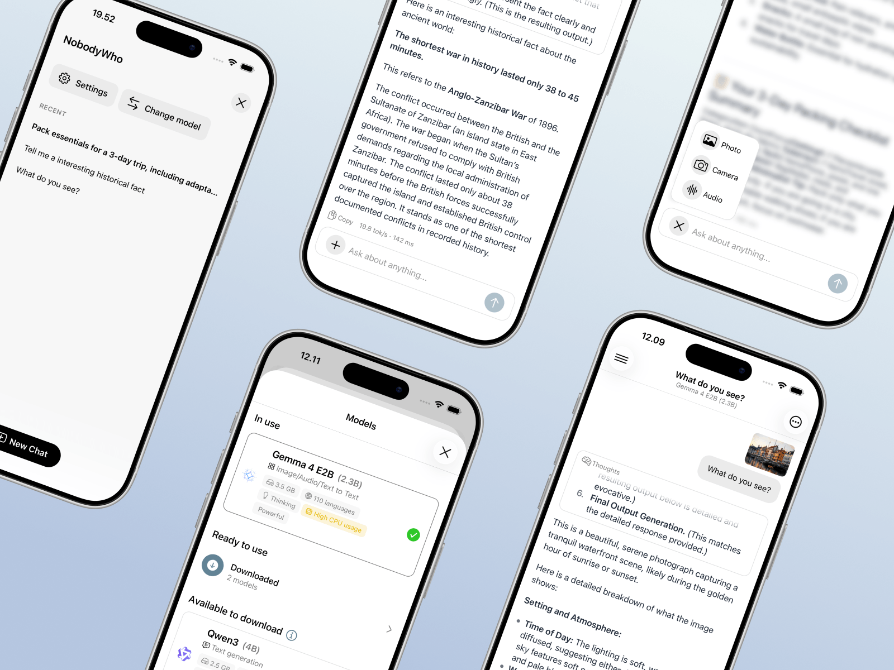
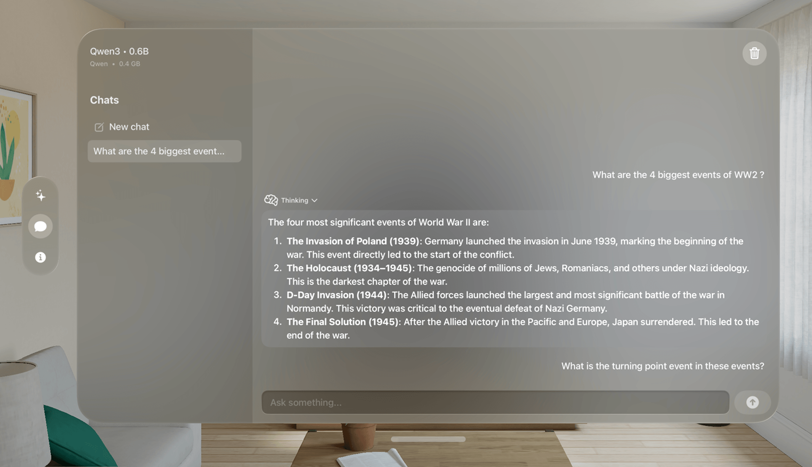

Open-source local inference, built in Copenhagen
Run AI where your software lives.
Use open text, vision, and speech models without sending data to a server.

One library. A few lines of code.
Install NobodyWho, load a compatible model from Hugging Face, and ask your first question.
Install the library
Use uv add nobodywho or install from PyPI.
Choose a model
Load any compatible GGUF model from Hugging Face or local storage.
Run locally
Stream tokens or return the complete response from the device.
from nobodywho import Chat chat = Chat( 'huggingface:NobodyWho/ Qwen_Qwen3-0.6B-GGUF/ Qwen_Qwen3-0.6B-Q4_K_M.gguf' ) response = chat.ask('Is water wet?') print(response.completed())
Private by architecture. Useful beyond chat.
One local runtime covers language, audio, vision, retrieval, and tools.

Keep data on the device
Prompts and responses stay in local memory, including in secure and offline environments.
Listen, speak, and see
Use speech to text, text to speech, voice activity detection, and multimodal models.
Build with your own knowledge
Add embeddings, reranking, RAG, structured output, and tool calling.
Native in the stack you already use.
The same inference engine is available across six language and application bindings.

European open source, made in Copenhagen.
NobodyWho is open under EUPL-1.2 and free for individuals and companies. The library is built for software that should keep working without a connection.
Explore the repository